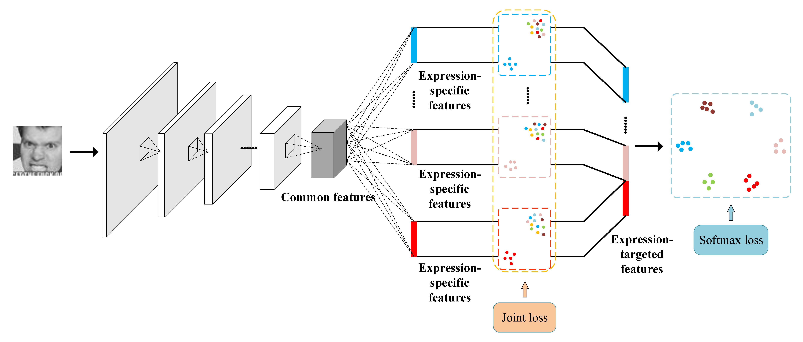

Ying Huang
Xiamen University |
 |
|
News
|
|
About Me
I was a master student at School of Information and Science Engineering, Xiamen University. I obtained my bachelor degree from China University of Mining and Technology in 2016.
My research interests are computer vision and deep learning.
Selected Publications | Go to the full list
| | |
|  |
Expression-Targeted Feature Learning for Effective Facial Expression Recognition Y. Huang, Y. Yan, S. Chen, H. WangJournal of Visual Communication and Image Representation (JVCI), 2018 [pdf] |
| | |

|
Revisiting Graph Construction for Fast Image Segmentation Z. Zhang, F. Xing, H. Wang, Y. Yan, Y. Huang, X. Shi, L. YangPattern Recognition (PR), 2018 A class project and a follow-up work of SemiContour. |
| |